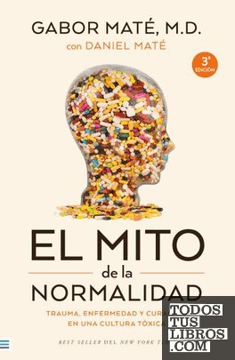

El mito de la normalidadGabor Maté

El mito de la normalidad
Gabor Maté
El médico Gabor Maté sostiene que buena parte del malestar actual nace del trauma y del estrés de una cultura poco saludable, y propone una mirada más compasiva de la enfermedad.
- Ficha bibliográfica
- Todos tus libros (CEGAL)
Este libro tiene derechos de autor, así que no lo alojamos. Te dejamos la ficha para que sepas de qué trata y lo busques en una librería o biblioteca.